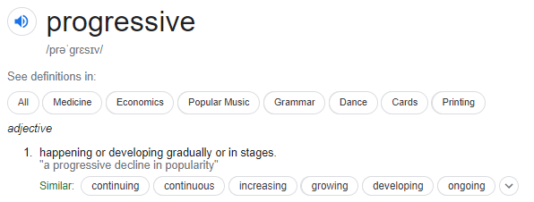
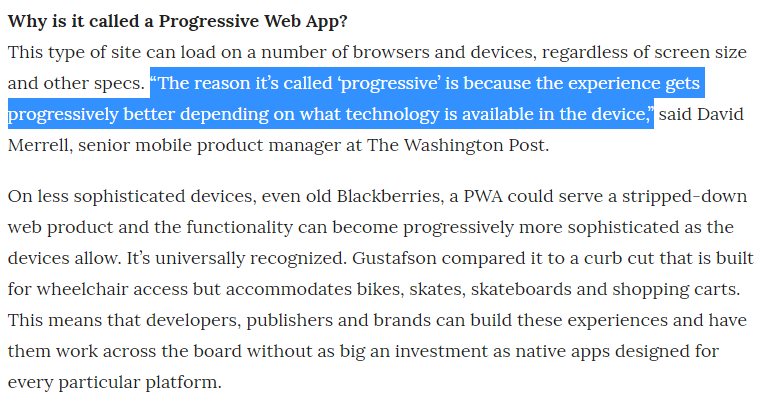

Introduction to progressive web apps
Let's build a mobile app without building a mobile app :)
Rule of thumb?
Built for web, acts like native app
Of course, by native I mean - android, ios, windows etc..
A Formal Definition...
Progressively enhancing the web apps to look and feel like native apps, and allowing features like -
- Accessing hardware - Camera, Mic, etc.
- Sensors? Location? GPS?
- Accessing Storage?
- Push Notifications
- Working Offline?
Let's go back to the english word

Improving Experience "Progressively"

Read More
But why do we need PWAs?
We already have Native apps, don't we?
Moreover!
comScore Mobile Metrix - 2015 report says that
- Total activity on smartphones and tablets accounts for 62 percent of digital media time spent
- 87% of usage is Native Apps and only 13% of usage is on Mobile Web!
Ask yourself!
- How many times do you go to windows app store to install a new app?
- How many times do you go to play store to download a new app?
- Even if you download new apps, do you use them religiously?
The fact is, that most users spend most of their "Native Apps" time on top 3 native apps!
But why such a huge number for Native apps?
- Push Notifications bring users back
- Homescreen icons give easy access
- Access native device features like camera makes the app more interesting
- Working offline.
Now that's everything that PWAs can handle too!
Now let's finally answer the question!
Why Progressive Web Apps?
- Built with HTML, CSS, and JavaScript (Web technologies super easy to learn)
- No need to learn multiple languages for multiple platform
- Install on home screen
- Work Reliably over varying networks
- Also works offline
- Less storage space
- Access to most of the native features (Still improving though)
Remember these 5 things while working on PWA
- Responsiveness: Shouldn't break on different screensize
- Reliable: Load fast and provide offline access
- Installable: Keep it installable
- Fast: Should run smoothly over bad networks
- Engaging:Feel like native apps on mobile devices, have app like interactions, build with the mindset of native app